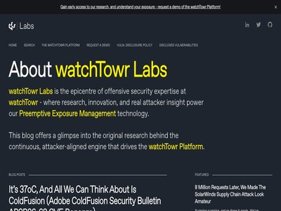

August 14, 2026 · 12 articles

You’re Back In The Room (Citrix NetScaler Pre-Auth RCE CVE-2026-8452(?))
August 14, 2026
Suddenly, you’re in a room. You look around - oh, you’re surrounded by other new starters at your new job. Yes, it’s Monday, and you’re being onboarded. You know the drill - it’... (watchTowr Labs)

Hackers Exploiting Unpatched GeoServer Zero-Day
August 14, 2026
The security defect is described as an SQL injection that could allow attackers to achieve remote code execution. The post Hackers Exploiting Unpatched GeoServer Zero-Day appear... (SecurityWeek)
AmnesiaStealer macOS Malware Steals Data, Controls Browser Sessions
August 14, 2026
The Rust-based macOS infostealer harvests users’ passwords, keychain information, Chromium-based browser data, and Safari cookies. The post AmnesiaStealer macOS Malware Steals D... (SecurityWeek)

The hardest part of agentic AI may be rebuilding the business
August 14, 2026
Organizations expect AI agents to change how work gets done, driving productivity and growth while allowing employees to focus on higher-value tasks. Few, however, have the proc... (Help Net Security)
Weak IAM affects up to 98% of cloud environments
August 14, 2026
Misconfiguration remains one of the leading threats to cloud environments because a single configuration error can result in public network access, unrotated keys, missing encry... (Help Net Security)

Risky Bulletin: White House lets private companies carry out offensive cyber ops
August 14, 2026
In other news: AI hacking campaign breached Taiwan's government; macOS bug exploited over the internet to drop cryptominers; Kenya orders internet cafes to store logs. (Risky Business News)
17 draft Cyber Resilience Act standards are open for comment
August 14, 2026
A company selling a connected toy in Europe must show by the end of 2027 that the product meets the Cyber Resilience Act. The law states what manufacturers have to achieve and s... (Help Net Security)
New infosec products of the week: August 14, 2026
August 14, 2026
Here’s a look at the most interesting products from the past week, featuring releases from A10 Networks, ScienceLogic, Searchlight Cyber, and SelectHub. ScienceLogic delivers se... (Help Net Security)

New Zealand says China tried using space investments to spy on local affairs
August 14, 2026
Intelligence Service says finding domestic threats is harder due to proliferation of toxic content online (The Register - Security)

ISC Stormcast For Friday, August 14th, 2026 https://isc.sans.edu/podcastdetail/10052, (Fri, Aug 14th)
August 14, 2026
(SANS ISC)
OpenAI ditches Recall-style screenshot surveillance for friendly keylogging
August 14, 2026
'Computer History' records clicks and typing to build ChatGPT memories (The Register - Security)

Apple sends new ‘Threat Notification’ alerts over mercenary spyware attacks
August 14, 2026
You're not alone if you just received an "Apple Threat Notification" saying it detected a "mercenary spyware attack targeted at your iPhone." [...] (BleepingComputer)
August 13, 2026 · 65 articles
Hackers breach govt webmail while running parallel crypto fraud
August 13, 2026
The Jewelbug hacker group has been carrying out espionage operations targeting governments and militaries while also engaging in cryptocurrency fraud. [...] (BleepingComputer)

Adobe Commerce CVE-2026-71362 Comes Under Attack Shortly After Public Disclosure
August 13, 2026
Hackers began targeting a critical Adobe Commerce flaw that could let unauthenticated attackers hijack customer accounts and access private data. Hackers began targeting CVE-202... (Security Affairs)

CVE-2026-18428 - OpenSearch SQL Plugin - Async Query Validation Bypass
August 13, 2026
Bulletin ID: 2026-081-AWS Scope: AWS Content Type: Important (requires attention) Publication Date: 08/13/2026 10:30 AM PDT Description: OpenSearch SQL plugin is a plugin that e... (AWS Security Bulletins)

How to Improve Cloud Security Posture With CSPM: Visualizing the Attack Path
August 13, 2026
One dashboard for misconfigurations. A separate one for identities. Neither tells you what an attacker can actually reach. Most cloud security teams operate with fragmented visi... (Orca Security Blog)
Critical VMware vCenter RCE flaw exploited for reverse SSH access
August 13, 2026
A recently patched critical vulnerability (CVE-2026-59310) in VMware vCenter Syslog Server is being exploited in an active campaign to deploy a reverse SSH tool for persistence... (BleepingComputer)

Black Hat USA 2026: Will vulnerability discovery eventually decline in the AI era?
August 13, 2026
And will today’s surge in AI-driven vulnerability discovery eventually make tomorrow’s software safer? (ESET WeLiveSecurity)
Attackers exploit critical SharePoint flaw after PoC goes public (CVE-2026-55040)
August 13, 2026
Threat actors have begun exploiting a critical Microsoft SharePoint flaw following the release of proof-of-concept (PoC) exploit code by Rapid7. About CVE-2026-55040 Tracked as... (Help Net Security)
Fortinet Patches Authentication Flaws in FortiWeb and FortiManager
August 13, 2026
The vulnerabilities could allow attackers to log in with random usernames and passwords or impersonate any FortiGate appliance. The post Fortinet Patches Authentication Flaws in... (SecurityWeek)
Black Hat USA 2026: What the Hugging Face hack tells us about human responsibility
August 13, 2026
The incident involving OpenAI models shows that autonomous hacks make human oversight more important, not less (ESET WeLiveSecurity)
White House Mobilizes Security Firms for Operations Against Foreign Cybercrime Gangs
August 13, 2026
Contracts may require a $1 million bond, which will be forfeited if a company fails to comply with operational requirements. The post White House Mobilizes Security Firms for Op... (SecurityWeek)
A bold new strategy or a dangerous precedent? Experts are divided on Trump’s memo.
August 13, 2026
The “philosophical shift” that the memo authorizes raises legal, practical and moral questions, experts say. The post A bold new strategy or a dangerous precedent? Experts are d... (CyberScoop)
Tech contractor for Brightly Software sentenced to 2 years in prison for insider attack
August 13, 2026
Cameron Curry stole corporate data and employee information, which he used to threaten the company as his six-month contract gig came to a close. He ultimately extorted the comp... (CyberScoop)
U.S. CISA adds Metabase, Windows, and Cisco Secure Firewall flaws to its Known Exploited Vulnerabilities catalog
August 13, 2026
U.S. Cybersecurity and Infrastructure Security Agency (CISA) adds Metabase, Windows, and Cisco Secure Firewall flaws to its Known Exploited Vulnerabilities catalog. The U.S. Cyb... (Security Affairs)

AWS Certificate Manager will discontinue email validation to prove domain validation for certificates
August 13, 2026
Today, we’re announcing that AWS Certificate Manager (ACM) will discontinue support for email-validated public certificates by September 30, 2027. If you use email validation fo... (AWS Security Blog)
Ukraine shuts down 94 fraudulent call centers, seize millions in cash
August 13, 2026
Authorities in Ukraine shut down 94 fraudulent call centers across the country that lured people into investment scams or tried to obtain access to bank accounts. [...] (BleepingComputer)
Akira hackers disable EDR with Safe Mode, steal data but fail to encrypt
August 13, 2026
An Akira ransomware affiliate disabled the endpoint detection and response (EDR) solution on a compromised system by restarting the machine into Safe Mode with Networking. [...] (BleepingComputer)

Total eclipse of the Internet: traffic impacts in Iceland, Spain, and Portugal
August 13, 2026
Cloudflare's data shows a clear impact on Internet traffic from Iceland to Spain and Portugal, following the path of totality of the total solar eclipse that occurred on August... (Cloudflare Blog)

Curiouser and Curiouser
August 13, 2026
In this edition of the Threat Source newsletter, William reflects on the “Make Hazel a Hacker” segment in Beers with Talos, and how cybersecurity is a field where questions can... (Cisco Talos)

Team PCP Stole 78,330 Secrets From 2,186 Organizations. CloudSEK Just Published the List.
August 13, 2026
Team PCP exfiltrated 78,330 secrets from 2,186 organizations via CI/CD pipelines. Analysis of the CloudSEK disclosure, why attackers target CI/CD, and how to defend. (StepSecurity Blog)
Microsoft patches LegacyHive Windows zero-day vulnerability
August 13, 2026
Microsoft has released security patches to address a Windows zero-day vulnerability known as "LegacyHive," disclosed after the July 2026 Patch Tuesday. [...] (BleepingComputer)
AI 'watermark removers' flood the web. Almost none can prove they work.
August 13, 2026
Multiple 'watermark removers' have surfaced days after Anthropic began watermarking text generated by Claude, including an open source project with over 4,500 GitHub stars and p... (BleepingComputer)

Why API Discovery Is Critical for Modern AppSec Programs
August 13, 2026
Hidden API Estate And AI-speed Recon Are Reshaping Modern Application Risk Key Takeaways Unknown APIs create unattributed exposure, and such exposure rarely gets tested. Attacke... (Qualys Blog)
AI’s ‘middle class’ has gotten dramatically better at hacking
August 13, 2026
As frontier models and their sandbox escaping exploits dominate front-page news, researchers are increasingly worried about cheaper, more efficient AI models. The post AI’s ‘mid... (CyberScoop)

Your AI Agents Are Using Your Credentials
August 13, 2026
AI agent security is an identity problem, but it often starts as a secrets and credential problem. Do your AI agents operate using static API keys, tokens, and other reusable cr... (GitGuardian Blog)

New Mirai variant adds stealth capabilities to notorious botnet code
August 13, 2026
Beyond Mirai’s usual functions, the new code features include encrypted communications with command-and-control servers and a “sniffer” that looks for default access credentials. (The Record)
The backup Microsoft never promised you
August 13, 2026
SPONSORED FEATURE: Your M365 and Azure data might not be as safe as you think from ransomware; time for a reality check (The Register - Security)

AI worms are coming - and traditional controls won't stop them
August 13, 2026
Researchers built a worm that reasons about hosts it infects, and the open-weight models powering it sit outside AI-provider safety controls. (ReversingLabs Blog)

Closing the Blind Spot: Securing Personal Repositories in the Software Supply Chain
August 13, 2026
Personal repositories are where corporate secrets quietly escape. Wiz correlates them to your developers, validates the real risk, and drives the fix. (Wiz Blog)

Exposed AWS Access Key Linked to Data Breach Affecting 1500+ UK Charities
August 13, 2026
CRM provider Beacon has revealed that a compromised AWS access key was the likely root cause of the breach of 1500 UK charities’ data (Infosecurity Magazine)
Trezor discloses data breach affecting nearly 14,000 customers
August 13, 2026
Hardware wallet manufacturer Trezor disclosed a data breach affecting nearly 14,000 of its customers after ShipMonk, its shipping provider and logistics partner, got hacked. [...] (BleepingComputer)
Google Cloud Targets 2027 for First Major Post-Quantum Security Milestone
August 13, 2026
Google Cloud has set a 2027 deadline to mitigate store-now-decrypt-later risks as part of its post-quantum cryptography roadmap, with wider migration goals extending through 2028 (Infosecurity Magazine)
Cybersecurity M&A Roundup: 21 Deals Announced in July 2026
August 13, 2026
Significant cybersecurity M&A deals announced by Barracuda, CrowdStrike, Cyera, Okta, Palo Alto Networks, and Qualcomm. The post Cybersecurity M&A Roundup: 21 Deals Announced in... (SecurityWeek)
Shadow AI: Risks, Detection, and Security Strategies
August 13, 2026
Key Takeaways Shadow AI is any use of artificial intelligence inside an organization that no one approved, registered, or monitored. It covers consumer chat tools, AI features s... (Orca Security Blog)
Who Vets AI’s Code? The Scale Challenge Facing Open Source Ingestion
August 13, 2026
AI coding tools can introduce unvetted or hallucinated open source dependencies faster than traditional security reviews can keep pace. ActiveState explains why organizations sh... (BleepingComputer)
DataGrout helps enterprises control AI usage, governance and LLM costs
August 13, 2026
SelectHub has announced the launch of DataGrout, its specialized AI research lab introducing an LLM inference optimization platform and AI governance solution for enterprises. D... (Help Net Security)
A10 Networks introduces AI Gateway to secure and manage enterprise AI
August 13, 2026
A10 Networks has announced the general availability of the A10 AI Gateway, a centralized, intelligent control plane that gives organizations unified routing, cost management, an... (Help Net Security)
Certificate Transparency Monitoring is now generally available
August 13, 2026
Cloudflare's Certificate Transparency Monitoring is now generally available. The biggest change: we no longer email you about certificates Cloudflare issued for your domain, so... (Cloudflare Blog)

The Model Is the Malware | What Four Agentic Intrusions Tell Defenders
August 13, 2026
OpenAI, Anthropic and Meta disclosed agents reaching external systems. The tools didn't matter, and that changes the playbook for investigating intrusions. (SentinelLabs)

The State of Ransomware Q2 2026
August 13, 2026
For the past year, the ransomware conversation has centered on concentration: a handful of dominant RaaS operations controlling most of the damage, and a shrinking pool of activ... (Check Point Research)
Germany moves to give spy agencies hacking and sabotage powers
August 13, 2026
Germany’s cabinet approved legislation that would let its intelligence agencies hack foreign systems, sabotage adversaries’ supply chains and feed false information to extremist... (The Record)
WhatsApp rolls out new feature that flags potential scam messages
August 13, 2026
WhatsApp has begun rolling out a new optional "Scam Alert" feature, which uses a local machine learning model to warn users when scammers are targeting them. [...] (BleepingComputer)
Venture Firm Team8 Secures Additional $365 Million
August 13, 2026
The Israeli company has nearly $2 billion in total assets under management since 2014. The post Venture Firm Team8 Secures Additional $365 Million appeared first on SecurityWeek . (SecurityWeek)
Cloud Infrastructure Security: Risks and Best Practices
August 13, 2026
Key Takeaways Cloud infrastructure security is the practice of protecting the compute, network, identity, storage, and control-plane layer your applications run on. It covers th... (Orca Security Blog)

New Android malware lets criminals use your bank card in real time
August 13, 2026
Social engineering, a Remote Access Trojan (RAT), and NFC relay malware walk up to an ATM. It's no joke. Together, they can empty your bank account. (Malwarebytes Labs)
AWS key exposed in JavaScript may have lit way to Beacon's charity data
August 13, 2026
CRM provider confirms customer database was copied and probably downloaded in readable form (The Register - Security)

Separating AI’s Technological Problems from Its Capitalism Problems
August 13, 2026
This essay was written with Nathan E. Sanders, and originally appeared in Tech Policy Press . AI represents the first time we humans can do cognitive work outside of our bodies... (Schneier on Security)

Inside the ECB’s AI Cyber Directive: What EU Banks Need to Know
August 13, 2026
A bank isn’t just a vault holding money. It is an engine powered by implicit public trust, sustained by the continuous confidence that funds remain secure and accessible on dema... (JFrog Security Research)
153GB of stolen credentials surface after LiteLLM supply chain attack
August 13, 2026
A massive 153GB archive stolen during the LiteLLM supply chain attack exposes credentials and other sensitive data linked to thousands of corporate domains, including AWS, Samsu... (Help Net Security)
Passwords stored in public Google Doc then showed up in search results
August 13, 2026
Developer spotted hostname and credential string lurking in autocomplete (The Register - Security)
Dissecting the JWR phishing framework
August 13, 2026
Cisco Talos recently identified an undocumented phishing framework, internally branded "JWR" by its developer, built to convincingly impersonate checkout and login pages across... (Cisco Talos)
Akira Affiliate Crashes Ransomware After Attempting EDR Evasion
August 13, 2026
Huntress documents how a ransomware affiliate sabotaged its own attack with an anti-EDR effort (Infosecurity Magazine)
Critical VMware vCenter Vulnerability in Attackers’ Crosshairs
August 13, 2026
Tracked as CVE-2026-59310, the directory traversal bug allows remote attackers to execute arbitrary code. The post Critical VMware vCenter Vulnerability in Attackers’ Crosshairs... (SecurityWeek)
Automate Security Response Playbooks with Orca Workflows
August 13, 2026
Key Takeaways Accelerate your Signal to Action Pipeline Most real security responses aren’t isolated to a single action. They’re a sequence of steps that carry an alert all the... (Orca Security Blog)
Nightmare Eclipse Drops Windows Zero-Day Exploit ‘ShieldBreak’
August 13, 2026
Dropped on Patch Tuesday, the exploit allows any user to spawn a shell with System privileges. The post Nightmare Eclipse Drops Windows Zero-Day Exploit ‘ShieldBreak’ appeared f... (SecurityWeek)
ICO Reprimands Criminal Records Office After 2023 Breach
August 13, 2026
The ICO has issued a formal reprimand to ACRO after patching and security monitoring failures led to a breach (Infosecurity Magazine)
Storm-1175 Replaces Medusa With New StormEncryptor Ransomware
August 13, 2026
Microsoft says China-linked Storm-1175 is using a new ransomware called StormEncryptor, replacing Medusa in its latest attacks. Microsoft says China-linked, financially motivate... (Security Affairs)
North Korean Lazarus Group Uses Windows Zero-Day in Operation Dream Job
August 13, 2026
Lazarus targets defense professionals with fake Lockheed Martin jobs, exploiting a Windows zero-day to deploy backdoors and evade security controls. Check Point Research has unc... (Security Affairs)

Belgium's eID Authentication Opens Citizen Accounts to RCE
August 13, 2026
The trust framework underlying Belgium's electronic ID system was fully compromised by severe vulnerabilities in a key browser extension, showcasing bigger problems with extensi... (Dark Reading)
Four corporate investigation mistakes organizations make under pressure
August 13, 2026
In this Help Net Security video, Christine Gadsby, VP and Chief Security Advisor at BlackBerry, explains why corporate investigations go wrong before the forensic team arrives.... (Help Net Security)
DDoS attacks hit record scale as 1 Tbps+ campaigns become more common
August 13, 2026
DDoS attacks grew in scale during the first half of 2026, bringing larger traffic floods, shorter attack durations, and increasingly automated campaigns. Cloudflare’s H1 2026 DD... (Help Net Security)
Product showcase: Is this image real? Slop or Not investigates
August 13, 2026
Slop or Not is an AI text and image detector for iPhone and Mac that runs entirely offline, with no account required. It uses on-device AI models powered by the Apple Neural Eng... (Help Net Security)
Wireshark 4.6.8 patches 28 security bugs, nine in file parsers
August 13, 2026
Wireshark 4.6.8 fixes 28 security bugs in the protocol analyzer, and nine of them fire when someone opens a saved capture file. Those nine sit in file parsers, the code that rea... (Help Net Security)
Chinese Loongson processors have leaky caches, researchers find
August 13, 2026
Attackers could extract data, even working from inside a guest VM (The Register - Security)
Using Gemma4 with Ollama - Testing File Hash Analysis and Recommendations with AI, (Wed, Aug 12th)
August 13, 2026
In the past few weeks, I have been using Gemma4 as a Large Language Model (LLM) to see how useful it can be to analyze some of the malware hashes uploaded to the DShield sensor... (SANS ISC)

Malware Crypting Services and the Threat Actors Who Sell Them
August 13, 2026
Insikt Group analyzes 24 threat actors selling malware crypting services. Learn about their evasion techniques, market dynamics, and how defenders can prioritize behavioral dete... (Recorded Future)
August 12, 2026 · 42 articles
China-Linked Hackers Use AI Agents in Autonomous Attack on Taiwan
August 12, 2026
China-linked hackers reportedly used eight AI agents to breach a government network, steal data and compromise accounts with minimal human oversight. Israeli cybersecurity firm... (Security Affairs)
Patch Tuesday: Update now to fix 421 flaws, including three zero-days
August 12, 2026
Microsoft's August Patch Tuesday fixes 421 vulnerabilities, including three zero-days, 62 critical flaws, and dozens of Office remote code execution bugs. (Malwarebytes Labs)

Adobe Patches Three CVSS 10.0 ColdFusion and Campaign Classic Flaws
August 12, 2026
Adobe has shipped updates to address multiple critical security vulnerabilities impacting ColdFusion, Commerce, and Campaign Classic that, if successfully exploited, could resul... (The Hacker News)
Microsoft Fixes 400 Flaws on August Patch Tuesday
August 12, 2026
Microsoft has issued another massive batch of security updates with 400 fixed in the August Patch Tuesday (Infosecurity Magazine)
"City-Forum" data-theft attacks target Salesforce, ServiceNow portals
August 12, 2026
An ongoing data theft campaign uses custom tools to steal data exposed to anonymous users through Salesforce Experience Cloud and ServiceNow customer portals. [...] (BleepingComputer)
Android malware combo takes out loans and relays victims' credit cards
August 12, 2026
A new Android NFC relay malware called WindRelay is being used alongside the SpyNote remote administration tool (RAT) to steal live card data and send it to attackers in real ti... (BleepingComputer)

Rockwell Automation/Allen-Bradley MicroLogix PLCs Attack
August 12, 2026
What is the Attack? Cyber threat actors are targeting Internet-facing programmable logic controllers (PLCs) used by water and wastewater organizations, with successful compromis... (FortiGuard Labs)
CEVA Logistics Cyberattack Disrupts European Warehouses and Shipments
August 12, 2026
CEVA Logistics suffered a cyberattack disrupting European operations, with eight warehouses affected and shipments halted at impacted sites. CEVA Logistics suffered a cyberattac... (Security Affairs)
Black Hat USA 2026: AI is racing ahead of cybersecurity controls
August 12, 2026
AI took center stage, but the clearest lesson was less about what AI can do than about who is accountable when something goes wrong (ESET WeLiveSecurity)
ShieldBreak Zero-Day PoC Claims Microsoft Defender Patch Bypass With SYSTEM Access
August 12, 2026
The security researcher going by the name Chaotic Eclipse (aka INFINITE NIGHTMARE, MSNightmare, and Nightmare-Eclipse) has released a proof-of-concept (PoC) for a new Microsoft... (The Hacker News)
CISA gives federal agencies two weeks to patch Microsoft bug exploited in DPRK campaign
August 12, 2026
Researchers disclosed the bug to Microsoft after examining a long-running campaign by North Korean hackers to exploit the job application process. (The Record)
How AWS IAM role manager rethinks the starting point for IAM roles
August 12, 2026
When you build a new application or capability on Amazon Web Services (AWS), you want to focus on what you’re building. Getting a service running almost always begins with AWS I... (AWS Security Blog)
Spectre rears its ugly head again as researchers show some RISC-V chips are susceptible
August 12, 2026
Eight years on, we're still paying to hide the future glimpsed during speculative execution (The Register - Security)
Zoom Zero-Click RCE Flaws Allow Any Meeting Attendee to Compromise All Participants
August 12, 2026
Executive Summary Multiple critical memory corruption vulnerabilities (CVE-2026-53413, CVSS 8.3/9.0 and CVE-2026-53415, CVSS 8.3/9.0) were disclosed affecting Zoom Workplace cli... (Orca Security Blog)
FBI: Hackers using social engineering to breach accounts and steal explicit content
August 12, 2026
Leaked passwords, social engineering and spoofed social media sites are among the tools hackers are using to gather individuals' private content and sell it online, the FBI said. (The Record)
Walmart's "Trusted Agent" Approach to Purple Teaming
August 12, 2026
Walmart co-locates red and blue teams to build trust and improve security through collaborative purple teaming exercises (Dark Reading)
SharePoint Vulnerability Exploited Shortly After PoC Release
August 12, 2026
The vulnerability was patched by Microsoft in July and CISA warned that it could end up being exploited in the wild. The post SharePoint Vulnerability Exploited Shortly After Po... (SecurityWeek)
WindRelay Malware Pairs With SpyNote RAT in Live-Call Scam
August 12, 2026
New WindRelay NFC malware paired with SpyNote RAT let a fraudster clone a card mid-call (Infosecurity Magazine)
Linux Kernel Process Accounting, (Wed, Aug 12th)
August 12, 2026
A couple of days ago, Xavier posted about Atuin to gain more insight into the command history. Atuin does a great job of better organizing what is usually handled by "bash&#;x26... (SANS ISC)
Ransomware Hits Colombian Justice Ministry Days Before Presidential Transition
August 12, 2026
Attackers continue to target critical infrastructure and government-linked organizations in the country, mirroring the increased activity across Latin America. (Dark Reading)
Lazarus Used Post-Quantum Key Exchange to Deliver Zero-Day
August 12, 2026
Lazarus malware used post-quantum key exchange to protect delivery of a Windows zero-day exploit (Infosecurity Magazine)
JFrog Artifactory Now Integrates Natively with Artifact Registry in Google Cloud
August 12, 2026
Teams running containerized workloads on Google Cloud have long relied on JFrog as their single source of truth for container images. The missing piece has been getting Google C... (JFrog Security Research)
Mindgard Raises $30 Million to Protect AI Systems
August 12, 2026
The cybersecurity startup will use the fresh investment to scale its product, engineering, sales, and marketing teams. The post Mindgard Raises $30 Million to Protect AI Systems... (SecurityWeek)
Gunra Ransomware Exploits Fortinet Flaws to Target Critical Infrastructure
August 12, 2026
Gunra actors are using stealth to exfiltrate vast volumes of data from Microsoft services, US and Korean agencies have warned (Infosecurity Magazine)

AI is Working in the SOC. So Why are Security Executives More Worried Than Ever?
August 12, 2026
Something shifted in security operations over the last two years: AI stopped being a pilot program and became the plan. And if you survey 500 security professionals on whether t... (Rapid7 Blog)
OpenAI, Anthropic, Google API Flaw Let Weaker AI Models Decode Stronger Models' Reasoning
August 12, 2026
A newly disclosed flaw in the way OpenAI, Anthropic, and Google carried hidden AI reasoning between API calls let researchers recover internal reasoning and secrets from session... (The Hacker News)
Ivanti EPM Update Patches Remotely Exploitable Flaws
August 12, 2026
The vulnerabilities could be exploited to leak credentials for external SQL connections or crash an agent service. The post Ivanti EPM Update Patches Remotely Exploitable Flaws... (SecurityWeek)

The Agent Baseline: 35 controls, but where should you start?
August 12, 2026
The Agent Baseline defines 35 controls across six security outcomes-but the right starting point depends on how your organization uses agents. Learn how to sequence controls for... (Snyk Blog)
OWASP Top 10 for LLM Apps 2026: Excessive agency risk on the rise
August 12, 2026
While prompt injection and data disclosure remain concerns, excessive agency climbed the list - not surprising with recent security incidents. (ReversingLabs Blog)
Akira ransomware scum blocked victim's security tools - and broke their own encryptor
August 12, 2026
Gives a whole new meaning to Safe Mode (The Register - Security)
Walmart Leaders Transform Security Operations Without Going Bananas
August 12, 2026
The big-box giant has scaled its defenses by encouraging trust and innovation. Good communications, transparency and team spirit are key factors. (Dark Reading)
Microsoft’s massive Patch Tuesday releases continue as AI reshapes bug discovery
August 12, 2026
This month’s update features about five times the volume of patches Microsoft was shipping in a typical month before AI-assisted vulnerability discovery took hold. (The Record)
NIST Seeks Public Input on AI-Ready NVD Modernization
August 12, 2026
The US National Institute for Standards and Technology wants to modernize its National Vulnerability Database to embrace AI-powered vulnerability research (Infosecurity Magazine)
Control Which Package Registries Your CI Jobs and Developer Machines Use
August 12, 2026
Two StepSecurity controls show every CI job and developer machine that still installs from public registries. Once you can see them, you can block public registries in CI and ce... (StepSecurity Blog)
Tools to Scan Workloads and Containers: Detecting Threats Agents Miss
August 12, 2026
Security teams running containerized workloads across EKS, GKE, and AKS clusters face a persistent coverage problem. Agents protect the hosts they’re installed on, but ephemeral... (Orca Security Blog)
Prompt Injections for Defense
August 12, 2026
This seems to work : Researchers from Tracebit on Monday said they found that placing prompt injections alongside passwords, cryptographic keys, and other secrets stored on Amaz... (Schneier on Security)
Kimwolf v7 Hides DDoS Traffic Behind Chrome Fingerprints and Ethereum
August 12, 2026
Kimwolf v7: The Android TV Botnet That Now Hides Its Traffic Behind Chrome Fingerprints and Ethereum Palo Alto Networks Unit 42 discovered Kimwolf v7 on February 3, 2026, while... (Security Affairs)
Malicious LiteLLM Releases Tied to Trivy Hack May Have Exposed 2,100+ Organizations
August 12, 2026
Two malicious LiteLLM releases sat on PyPI for about 40 minutes in March carrying credential-stealing code capable of harvesting cloud keys, SSH keys, Kubernetes tokens, databas... (The Hacker News)
ICS Patch Tuesday: Vulnerabilities Fixed by Siemens, Schneider, Phoenix Contact
August 12, 2026
CISA has also published several advisories describing vulnerabilities in ICS and other OT products. The post ICS Patch Tuesday: Vulnerabilities Fixed by Siemens, Schneider, Phoe... (SecurityWeek)
Risky Bulletin: Russian hackers adopt the fake job interview tactics
August 12, 2026
In other news: Portuguese to face trial for developing WormGPT; AI assistant hacks gym website; OpenAI releases cyber models for blue teams. (Risky Business News)
Kimwolf botnet rebuilt to survive takedowns, researchers say
August 12, 2026
Months after police seized its servers and arrested an alleged operator, the Kimwolf botnet is running code that disguises attacks as Chrome traffic and fetches its orders from... (CyberScoop)

Defaulting on tech debt: When the bill comes due, AI is the collector
August 12, 2026
(Sysdig Blog)
August 11, 2026 · 1 article
Microsoft Patch Tuesday for August 2026 — Snort rules and prominent vulnerabilities
August 11, 2026
Microsoft has released its monthly security update for August 2026, which includes 421 vulnerabilities affecting a range of products, including 62 that Microsoft marked as "crit... (Cisco Talos)